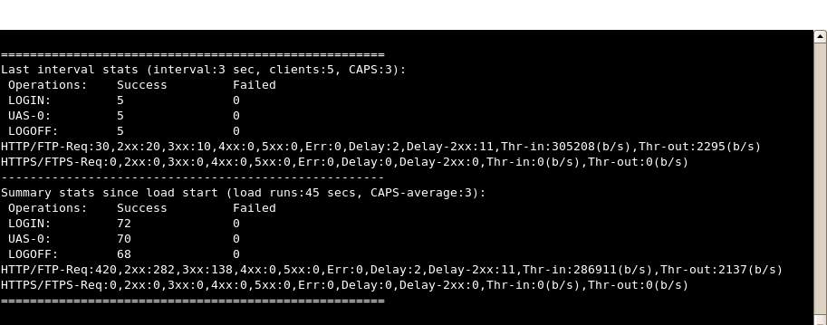

Welcome to curl-loader
Introduction
The loader is a C-written open-source community tool, simulating application load and application behavior of thousands and tens of thousands HTTP/HTTPS and FTP/FTPS clients, each with its own source IP-address. In contrast to other tools, curl-loader is using real client protocol stacks, namely, HTTP 1.1 and FTP of libcurl, TLS/SSL of openssl, and supports login and authentication flavors.
The tool is useful for performance loading of various application services, using HTTP, HTTPS, FTP, FTPS, web-sites testing, and traffic generation. Activities of each virtual client are logged and statistics provided: resolving, connection establishment, sending of requests, receiving responses, headers and data received/sent, errors from network, TLS/SSL and application (HTTP, FTP) levels.
Virtual clients are grouped to the so-called batches of clients, performing the same sort of activities. Configurable activities for the simulated clients are:
- authentication login;
- user activity simulation (UAS) by fetching several urls and timeouts in between;
- logoff.
The tool can be easily extended to generate telnet, tftp, ldap, etc other application load, supported by the great libcurl library.
Features List
Virtual clients - up to 2000-3000 clients from every running curl-loader process (future hyper mode will enable tens of thousand). Each client performs loading from its own IP-address;
Loading modes: smooth and storming. Gradual increase of virtual clients number at loading start is an option for the smooth mode;
IPv4 and IPv6 addresses and URIs;
HTTP 1.1, HTTPS, FTP, FTPS, TLS/SSL;
HTTP authentication login with POST or GET+POST methods. Unique configurable username and password for each virtual client as well as configurable posted string (post-forms) are the options;
HTTP logooff with POST, GET+POST, or GET (cookies); POST logoff with configurable posted string (post-forms);
HTTP Web and Proxy Authentication (HTTP 401 and 407 responses) with Basic, Digest (RFC2617) and NTLM supported;
HTTP 3xx redirections with unlimited number of redirections;
HTTP cookies and DNS caches;
TCP connections reuse or re-establishment is configurable;
Unlimited configurable number of UAS URLs and inter-URL waiting time for the smooth mode;
Mixing of HTTP, HTTPS, FTP and FTPS urls in a single batch of client configuration;
Logfile with configurable verbousness of tracing with output for each virtual client. The logfile is atomatically rewinded, when reaching configurable size to prevent disk crashes;
File with Status and Statistics per each virtual client;
Dialog GUI guided creation of configuration files and well as pre-cooked configuration examples;
Load Status GUI and load status output to file;
Detailed loading statistics at Load Status GUI and to file;
Here is a screenshot:

License
Actually it is GPL2 due to the code from iprouted2. If required, we can also consider GPL-compartible BSD-like license, and/or make it configurable.
Authors
Robert Iakobashvili (coroberti et gmail.com) and Michael Moser (moser.michael et gmail.com), both from Israel.
Successfully Used
To simulate HTTP/S load of thousands of clients against authentication gateway for testing of the gateway performance in various scenarios. curl-loader supplied HTTP/S client load against Apache web-server with the gateway in the middle, where the gateway made a browser hijacking and HTTP- redirection of the curl-clients to the HTTPS url at the gateway's own web-server. HTTPS page of the web-server provided a POST form to the user with username and password for the client/user authentication against an external AAA (RADIUS) server. If the authentication was OK, user (a libcurl virtual client object) was allowed to enter the Internet and to perform some sort of simulated by curl-loader network activity, namely, fetching urls and sleeping in between them. After enjoying Internet, user was coming to logoff.
To test web-server pages, authenticating tens and hundred thousand of clients, where each client comes to a HTTPS url using GET method and is redirected by the web-server to another url, providing authentication POST form with username and password. After successful authentication of a client the web-server was setting to the client server-cookies. Client activities were further simulated by fetching urls and sleeping in between. Clients were doing logoff using GET-method to the web-server logoff-url, where the cookies were used by the web-server to verify clients identity.
To generate Gbps traffic from thousands of TCP/HTTP clients and to test the impact of thousands of firewalling and NAT iptables/ipset rules and hundreds of the rules being added/deleted each second at performance of a gateway device. curl-loader provided client load against Apache web-server fetching a url with a gigabyte file, thus, creating a permanent heavy-load traffic, containing thousands of tcp-streams at the gateway in the middle.